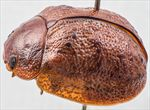
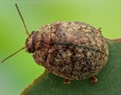
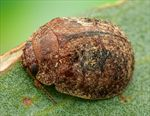
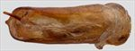
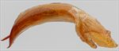
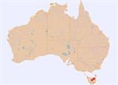

Click on images to enlarge
{kind=link}

Male, Miena, Tasmania
{kind=link}

Male, Miena, Tasmania
{kind=link}

Female, Upper Blessington, Tasmania
{kind=link}

Aedeagus, dorsal view (Miena, Tasmania)
{kind=link}

Aedeagus, lateral view (Miena, Tasmania)
{kind=link}

Distribution
Name
Trachymela sp. Ta103
Reference specimen
1998-0065, Miena, Tamania
Adult Description
Length: ♀ 6.4-7.6 mm [11], ♂ 6.2-6.8 mm [7].
Colour: head: uniformly mid- to dark-brown with black-tipped mandibles; antennomeres 1-3 pale-brown, 4-11 sometimes similar, more often grading fractionally darker towards apex, often with only lateral and/or distal edges of the darker shade, rarely grading to much darker; pronotum: brown, same shade as head, sometimes with vague, slightly darker infuscations, particularly as a transverse dark streak along anterior margin of disc; scutellum: brown, same shade as pronotum, usually edged in a slightly darker shade of brown; elytra: brown, same shade as pronotum, the disc scattered with small, wart-like dark-brown or black elevations, transverse depression near centre of disc sometimes with dark-brown or even black patches along its anterior and/or posterior margin or these patches may be joined into a larger dark region; elytral suture from scutellum to about summit often broadly black, the black sometimes extending away from suture near summit, punctures are similar to or a fractionally darker shade than interstices, humeral callus same shade as surrounding area; marginal area sometimes partially black from about centre almost to apex; venter: gula often black; thoracic ventrites mostly black or dark-brown, rarely paler, abdominal segments light-brown to mid-brown, legs light- to mid-brown, inside surface of elytral epipleura brown in anterior half, mostly black posteriorly. Cuticular wax: light brown throughout and distributed relatively uniformly throughout, though some specimens have a slighly denser coverage in the elytral post-basal depression and/or towards the elytral apex.
Shape: quite evenly and strongly rounded (height=41-47%BL), greatest height well in front of middle of elytral margin. Head; surface smooth to rugulose, punctures moderately large (pd~1.5-2xef) and quite evenly and quite densely packed. Antennae moderately long (AL ♂=41-44%BL, ♀=34-38%BL), filiform. Pronotum; almost evenly curved transversely, foveal depression absent or very shallow with epidermis elevated in a rounded pustule near its centre, surface of discal area variable, sometimes almost smooth with punctures well-defined, more often quite rugulose and uneven, with punctures less clearly defined, punctures are evenly distributed and quite dense (spacing~2pd), becoming much coarser at lateral margins, some much finer punctures are scattered among the larger ones. Front margins join lateral margins in a smoothly rounded right-angle, with lateral margin initially straight for a short length before curving smoothly and gradually towards rear margin, greatest width is about 75% of distance to rear margin. Scutellum; surface smooth or slightly rough, usually unpunctured, sometimes with a few very shallow and poorly defined punctures. Elytra; surface unevenly curved with a shallow or more distinct broad depression extending from just below elytral summit towards the discal margin, punctures distinct and relatively large, closely spaced and evenly to slightly unevenly distributed over anterior two-third of surface, surface more granular in posterior third, punctures in marginal area similar in size or larger than those on disc, much smaller punctures scattered on the interstices throughout, many small elevated dark verrucae scattered about the surface with a lower density in the post-basal depression and sometimes a higher concentration just posterior to the post-basal depression, the interstices often very rugulose, with some short transverse ridges present, surface continuous under humeral callus; lateral margin straight or slightly angled upward anteriorly. Vertical extension of epipleura considerable (HCE/PW=0.40-0.43). Venter; Prosternal process converging very slighly anteriorly, closed anteriorly, a light scatter of long setae present along prosternal process and on mesosternum, 1 seta (rarely more) each on anterior, median and posterior trochanters; front edge of metasternum beveled, slightly rounded; inner edge of epipleurae lacking setae. Aedeagus; moderately long (LPE=33-37%BL), in dorsal view, sides slightly sinuate, widest at base then narrowing towards apex before widening again to ostium, from there the sides converge towards apex in a smooth arc, dorsal surface membranous, smoothly curved with barely perceptible dorso-median channel, dorsal ostial processes terminate a little short of spatula, spatula moderate-sized, tip protruding to a blunt triangle; in lateral view, almost evenly curved throughout central and apical regions, thinning towards apex over 15% of length, tip deflexed, flagellum moderately thick and straight on exit from ostium.
Larvae
unknown.
Eggs
unknown.
Similar species
Ta06 – this species is also found in Tasmania and is essentially indistinguishable in dorsal morphology from Ta103. It does differ in the cuticular wax distribution, with that of Ta06 more uniform in both colour and arrangement. Ta06 is uniformly light brown ventrally, in contrast with Ta103 which has dark thoracic segments and the posterior half of the epipleura black. Females of Ta06 have slighly shorter antennae (31-33%BL). The aedeagus differs in shape between the two species.
Notes
This is Ta3 of de Little (1979), from his description and aedeagus figure. He recorded this species from Eucalyptus delegatensis, Eucalyptus : Cineraceae (3 specimens) and E. gunnii, Symphyomyrtus : Maidenaria (6 specimens) in north-western Tasmania.
Copyright © 2026. All rights reserved.